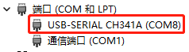
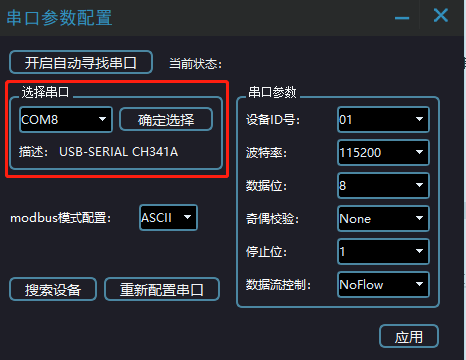
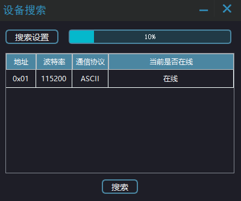
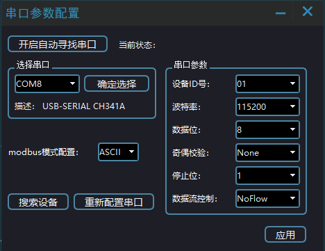
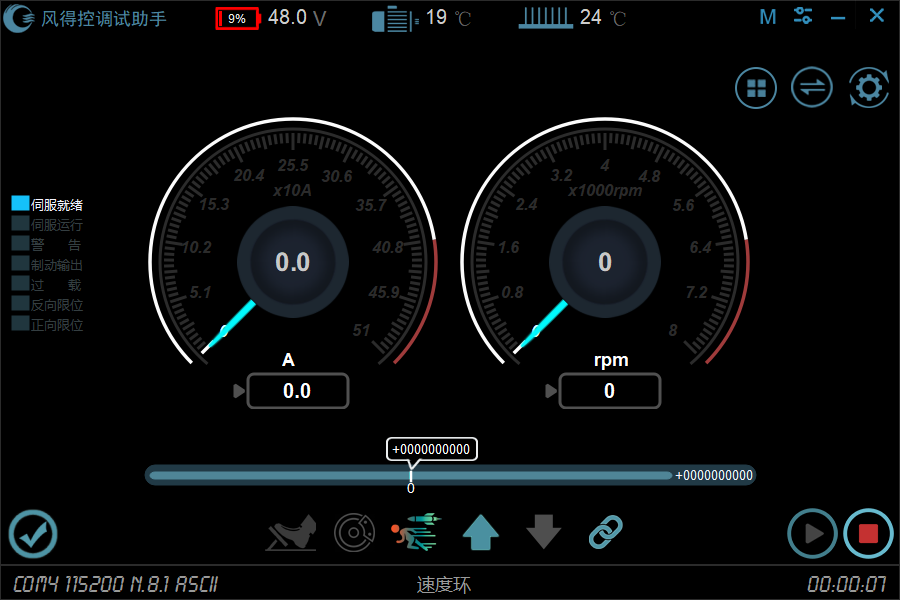
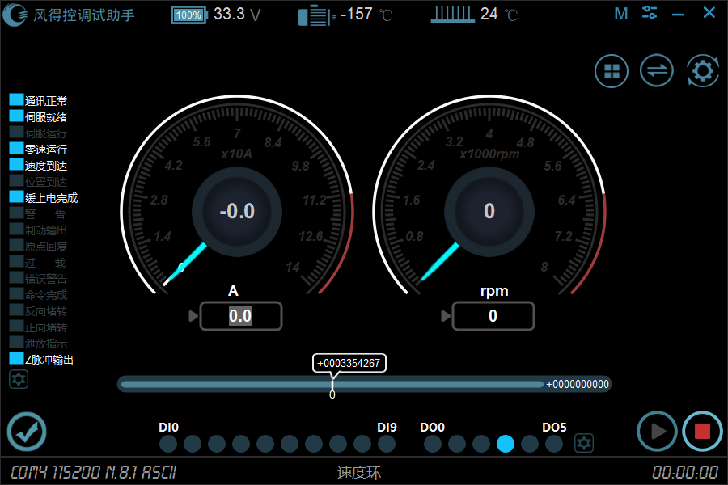

使用转串口通讯线，按照驱动器的借口说明，一端接驱动器，另一端接电脑，查看电脑设备管理器，看是否有转串口。

由上图可以看到，转串口通讯端口选择 COM8

如上图，在串口参数配置界面配置相应的串口。
①、在“选择串口”下方的下拉中选择正确的串口，即与驱动器通讯的串口，选择完成后点击“确认选择”。
②、选择串口后直接点击“搜索设备”，上位机会自动搜索对应的节点地址、波特率与通信协议。
如果需要重新选择串口或者在串口拔插后不能正常通讯，重复上述步骤即可完成配置。
如果当前串口与驱动器 485 接口连上，在操作了步骤 2 后，可以点击下图“搜索”查找当前的驱动器节点地址、波特率与通讯协议。

如上图，可以知道，节点地址为 1 波特率为 115200 通讯协议为 ASCII 的驱动器与串口通信上了。
如果当前没有在线的，表示当前与连接上驱动器通讯，线路没连接正确 ，或者驱动器没上电，或者串口没有选择正确，需要仔细排查情况。
点击“X 关闭窗口”，将会关闭当前寻址。
注 ： 建立通讯后，上位机会根据驱动器的版本号自动识别并打开对应的上位机界面。 比如连接的是电动车驱动器会打开电动车的界面；单路伺服与双路伺服界面都不一样。
在步骤 3 的基础上，如果当前找到地址为 1 的驱动器在线， 那么在下图选择好将要连接的伺服调试助手的“驱动器地址、波特率、通讯协议”

按照上述步骤，点击“应用”后将会打开伺服调试助手调试界面，如下图所示：

从上图可以看到：当前 485 通讯地址为 1 ，并且通讯正常。
在步骤 3 的基础上，如果当前找到地址为 1 的驱动器在线， 那么在下图选择好将要连接的伺服调试助手的“驱动器地址、波特率、通讯协议”
按照上述步骤，点击“应用”后将会打开伺服调试助手调试界面，如下图所示：

从上图可以看到：当前 485 通讯地址为 1 ，并且通讯正常。